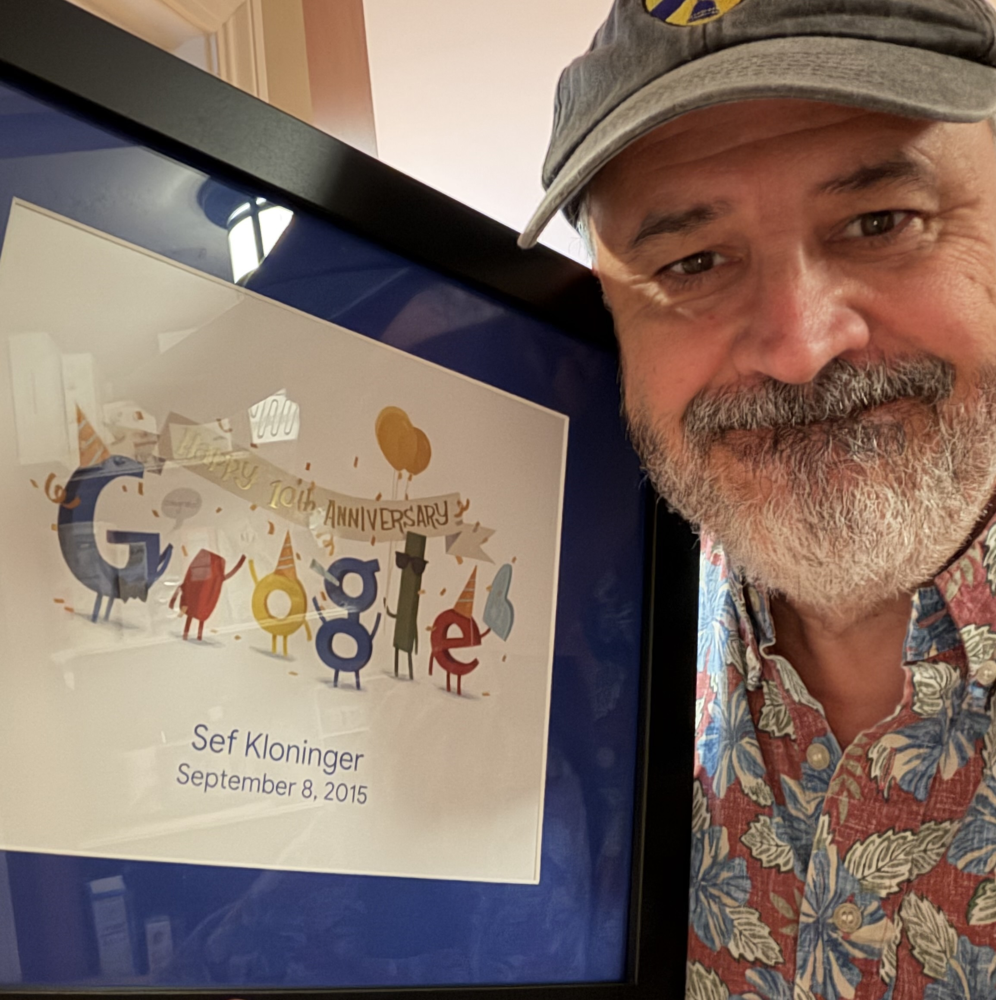

Leaving Google

An offer of a Voluntary Exit from Google HR landed in my mailbox right around my ten-year anniversary with the company, give or take. We'd had a couple of packages like this at Google before (news), basically the same deal you'd get if you got laid off. But this was the first one put in front of those of us working in one of the revenue engines of the company — I worked on Search.
I wasn't aiming to leave. I liked the work, I had a good team and boss. But the package was enough to kickstart a discussion, "why not now?". My wife and I ran numbers and discussed our futures. I clicked the button. My last day as a Googler was earlier this week, October 4th.
I have good feelings about my time at Google. It was nice that I saw a some different parts of the business: some consumer (three years at YouTube, four years at Search) and some enterprise (three years at Cloud). I got to play with big infrastructure and solve some hard problems. I saw behind the curtain. But the best part was the smart and interesting people I got to work with. I know it's a cliche, but it's the truth.
Not everything was great. I've decided to not use this space for dishy stories about how Google isn't all it claims to be. But I sure do love reminiscing and grousing as much as any engineer. If you want to share war stories over a beer, I'm always up for that.
What's next? I haven't decided if this is retirement, or a sabbatical, or something else. I've been off work for extended stretches twice before, once by choice and once not. Those two times taught me that the difference between a wonderful, mind-expanding time and a stress-fest is my own mindset. And now that I haven't been really working for six weeks now, I can confidently say that my mindset is positive and good.
I'm excited about the next phase. I feel fortunate to have some time to focus on what's important.